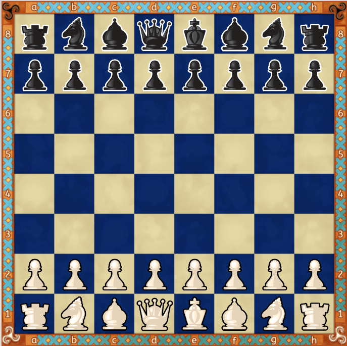

GatoArabe
Simplemente un gato en arabe
El gato árabe es conocido por ser una raza autóctona de Oriente Medio, donde ha sido criado durante siglos. Son gatos de tamaño
mediano a grande, con una cabeza redonda y orejas pequeñas y redondeadas. Su pelaje es corto y suave, generalmente de color marrón o gris.
Se trata con toda probabilidad del felino mejor adaptado a la vida en desiertos arenosos como los del Sahara, Arabia, Irán, Afganistán,
Turkmenistán y Pakistán. En las zonas menos áridas de estas regiones convive con el gato montés (F. silvestris), aparentemente sin problemas.
No obstante, se ha documentado su desaparición en algunos lugares debido al incremento de gatos domésticos cimarrones.
|
El gato arabe, suele jugar al ajedrez online, para practicar entradas tipicas de este juego,
Apertura Italiana, Defensa Siciliana, Defensa Francesa, Ruy López.
puede dividirse en dos grandes tipos o clases: una practica individual
para cada movimiento en el tablero cualquier plataforma, sin preparación especial,
por ejemplo, campeonato mundial de
ajedrez internacional portable, para los cuales los intérpretes
deben tratar su juego como si de una exhibición de baile fuera.
este gato es:
- Enlace absoluto
- Gato listo
- Gatointeligente
- Gato listo
- Gato inteligente
Gato Al InIcIO
- Gato listo
- Gatointeligente
- Gato listo
- Gato inteligente
|

|
|
{kind=link}